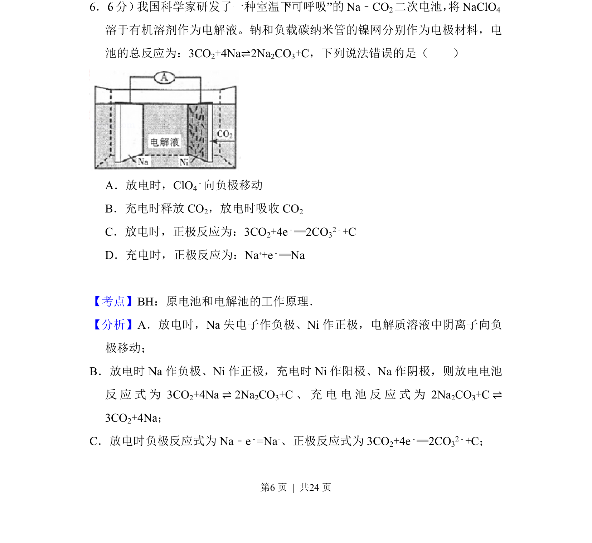
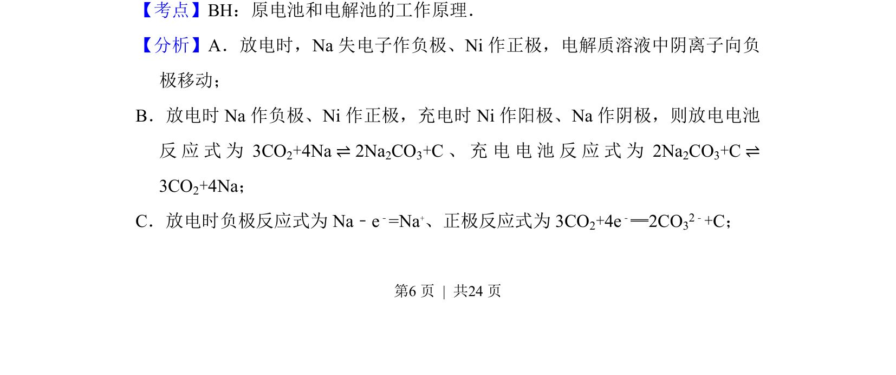
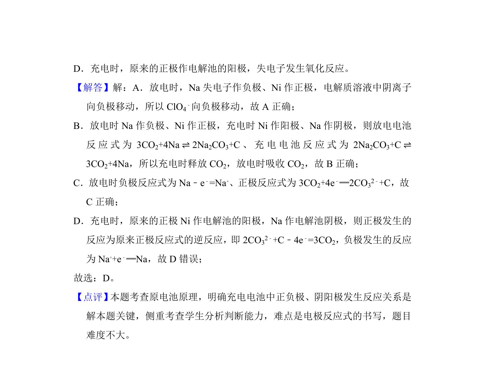

考点：原电池 电解池 电极反应

Na-CO2二次电池工作原理，判断电极反应及离子移动方向


📄 原 PDF 第 6 页：
素材/真题/吉林/2008-2024·（吉林）化学高考真题/2018年高考化学试卷（新课标Ⅱ）（解析卷）.pdf
6． （6分） 我国科学家研发了一种室温下“可呼吸”的Na﹣CO2二次电池， 将NaClO4 溶于有机溶剂作为电解液。钠和负载碳纳米管的镍网分别作为电极材料，电 池的总反应为：3CO2+4Na⇌2Na2CO3+C，下列说法错误的是（ ） A．放电时，ClO4 ﹣向负极移动 B．充电时释放CO 2，放电时吸收CO 2 C．放电时，正极反应为：3CO2+4e﹣═2CO32﹣+C D．充电时，正极反应为：Na++e﹣═Na
【考点】BH：原电池和电解池的工作原理．菁优网版权所有 【分析】A．放电时，Na失电子作负极、Ni作正极，电解质溶液中阴离子向负 极移动； B．放电时Na作负极、Ni作正极，充电时Ni作阳极、Na作阴极，则放电电池 反应式为3CO 2+4Na⇌2Na 2CO3+C、充电电池反应式为2Na 2CO3+C⇌ 3CO2+4Na； C．放电时负极反应式为Na﹣e ﹣=Na+、正极反应式为3CO 2+4e﹣═2CO32﹣+C；